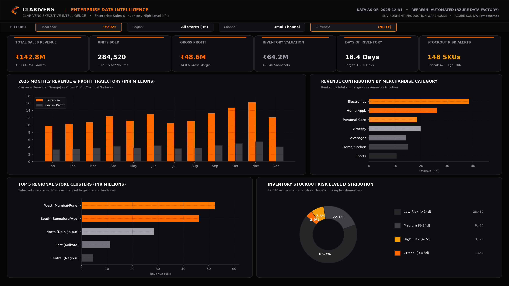
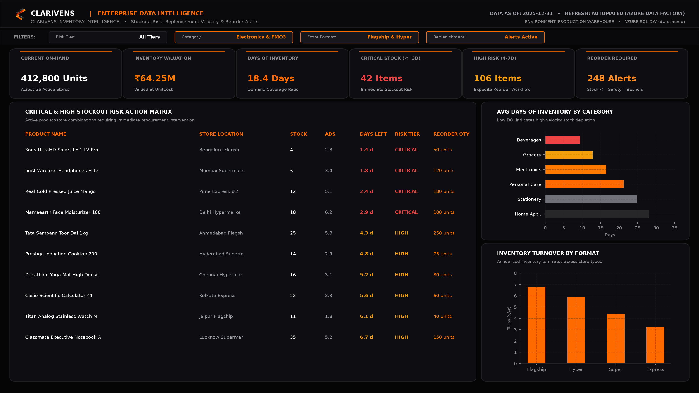
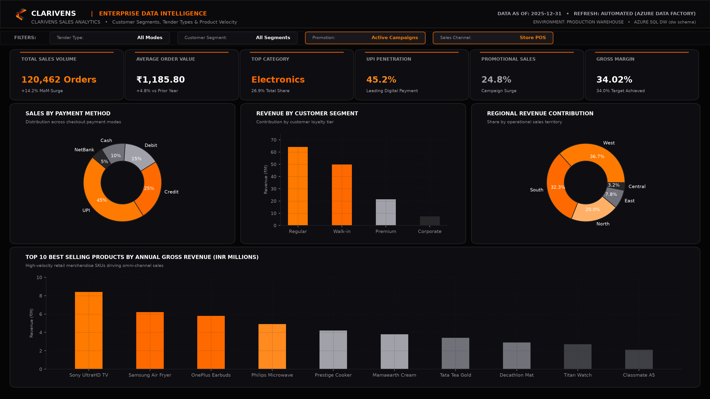

Category
Data Analytics
Turn raw business data into clear, decision-ready intelligence through data engineering, analytics, visualization and predictive insights.
Data Engineering & ETL Pipelines
Robust data engineering that pulls records from POS systems, flat files, databases, and third-party vendor APIs into structured, analytics-ready cloud warehouses with automated triggers, incremental loads, and full pipeline observability.
What's included
- Multi-source ingestion: automated pulls from CSV/JSON dumps, relational databases, and REST APIs
- Serverless pipeline orchestration with scheduled triggers, retry policies, and tumbling-window schedules
- Watermark-based incremental loading to ensure sub-second query speeds as transactional volumes grow
- Staging layer setup (`stg.*`) and dimensional warehouse star schemas (`dw.*`) tailored for reporting
- Detailed data dictionaries, entity-relationship models, and schema mapping documentation
Ideal for: organizations pulling data manually across fragmented systems, or needing an enterprise warehouse to power dependable reporting.
Discuss this capabilityData Cleaning & Automated Quality Gates
Production-grade Python validation frameworks that audit schema conformity, eliminate duplicate records, reconcile broken equations, and enforce business integrity before bad data ever reaches decision-makers.
What's included
- Multi-tier automated validation gates: schema verification, missing-value imputation, and null checks
- Primary key deduplication, referential foreign-key integrity, and calendar date feasibility verification
- Complex business-rule enforcement (e.g. inventory conservation equations, positive quantity guards)
- Automated data quality scoring (0–100%) and error logging to audit tables for full governance
- Clean, standardized, reconciled datasets handed back ready for modeling or dashboard consumption
Ideal for: teams wrestling with conflicting spreadsheet reports, unreliable transactional extracts, or untrusted numbers.
Discuss this capabilityExploratory Analysis & Business Intelligence
Interactive Power BI and Tableau reporting suites structured around the core metrics leadership actually tracks, enabling deep exploratory analysis, category diagnostics, and regional benchmarking.
What's included
- Dimensional star-schema modeling with optimized single-direction relationships for rapid filtering
- High-performance DAX measure libraries utilizing `VAR/RETURN` patterns for sub-second calculations
- Executive KPI cards, interactive decomposition trees, dynamic date slicers, and drill-through pages
- Dedicated category, supplier, store performance, and financial margin analysis views
- Walkthrough and handover session so business stakeholders confidently navigate and filter insights
Ideal for: C-suite executives and departmental managers needing real-time visibility into sales trends, margins, and operational drivers.
Discuss this capabilityAdvanced Analytics & Predictive Insights
Moving beyond backward-looking reporting into algorithmic forecasting, risk tier classification, and statistical performance modeling to identify operational blind spots and guide strategic decisions.
What's included
- Days of Inventory (DOI) and Average Daily Sales (ADS) velocity modeling for stockout risk detection
- Predictive reorder trigger algorithms and seasonal demand forecasting
- Customer behavior segmentation, cohort retention tracking, and margin elasticity analysis
- Anomaly detection to surface hidden cost leaks, return rate surges, or supplier fulfillment delays
- Executive summary documentation translating statistical models into clear, actionable business strategies
Ideal for: companies looking to proactively mitigate inventory risk, protect gross margins, and make data-grounded strategic investments.
Discuss this capabilityFlagship Intelligence Platform
Clarivens Inventory Intelligence
An end-to-end automated retail intelligence platform built by Clarivens.



End-to-End Enterprise Data Platform
Clarivens Inventory Intelligence — Retail Data Platform
Clarivens Inventory Intelligence is an end-to-end retail data platform that automates data ingestion, validation, transformation, warehouse loading, business intelligence and inventory-risk analysis across multi-source retail data. Architected for a multi-format retail group operating 36 physical stores across 9 Indian states, the platform ingests 178,000+ transactional and inventory records, runs a 12-rule Python automated data-quality gate, orchestrates incremental loading into an Azure SQL dimensional star schema, and powers an executive 6-page Power BI suite.